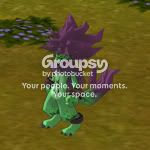
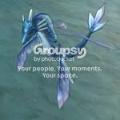
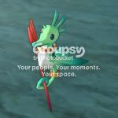
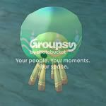
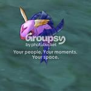
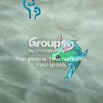
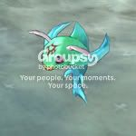

Underwater
Raigyou
Level : 33
HP : 512
EXP / Job EXP : 465 / 285
Attribute :
 Personality
Personality : Active
Map :
Teritory Cave B5F
Item : Dry Fish / Raigyou Sweat / Strange Dry Fish /
Raigyou Thorn /
Marionette Insmouse /
Raigyou Stamp
 Mokugyou
Level
Mokugyou
Level : 39
HP : 1,600
EXP / Job EXP : 2,700 / 2,700
Attribute :
Personality : Active
Map :
Teritory Cave B5F
Item : Dry Fish / Raigyou Sweat
/ Strange Dry Fish /
Raigyou Thorn / Marionette Insmouse
 Loincloth Man
Level
Loincloth Man
Level : 43
HP : 15,000
EXP / Job EXP : 17,640 / 17,640
Attribute :
Personality : Active
Map :
Teritory Cave B5F
Item : Dry Fish / Dry Shark Fin / Strange Dry Fish /
Insmouse Fabric / Marionette Insmouse /
Shoulder Devil Boost /
Loincloth Man Stamp

Poison Lizard
Level : 35
HP : 450
EXP / Job EXP : 493 / 357
Attribute :
Personality : Active
Map :
Morg Cliff /
Undead Island
Item : Meat / Riped Magical Book / Chameleon Tail / Crafted Skin /
Marionette Salamandra /
Poison Lizard Stamp

Sea Dragon
Level : 88
HP : 32,350
EXP / Job EXP : 6,675 / 6,825
Attribute :
Personality : Non Active
Map :
Seafloor Cave(Cold)
Item :
Dragon Meat /
Sea Dragon Eye / Mystery Crystal / Great Light Blue Skin / Suremoney Platinum
 Walrus
Level
Walrus
Level : 73
HP : 13,580
EXP / Job EXP : 3,750 / 4,200
Attribute :
Personality : Non Active
Map :
Seafloor Cave(Warm)
Item : Mineral Water / Light Blue Wing 1 / Herb Candy / Fish Scale /
Great Coral

Sea Horse
Level : 83
HP : 15,000
EXP / Job EXP : 4,200 / 4,950
Attribute :
Personality : Non Active
Map :
Seafloor Cave(Cold)
Item : Fish Scale / Mineral Water / Coral /
Keseran Pasaran /
Great Coral
 Poision Jellyfish
Level
Poision Jellyfish
Level : 77
HP : 19,800
EXP / Job EXP : 4,200 / 4,800
Attribute :
Personality : Link Under Water Type
Map :
Seafloor Cave(Warm)
Item : Antidote Fruit / Green Seriko / Lucky Perfume / Magic Crystal / Small Pack

Poision Jellyfishy
Level : 87
HP : 39,800
EXP / Job EXP : 6,600 / 6,960
Attribute :
Personality : Non Active
Map :
Seafloor Cave(Warm)
Item :
Mineral Water / Green Seriko / Lucky Perfume / Magic Crystal / Small Pack
Jellyfish
Level : 87
HP : 23,580
EXP / Job EXP : 5,700 / 6,000
Attribute :
Personality : Link Underwater Type
Map :
Seafloor Cave(Cold)
Item : Mineral Water / Soul Water / Red Seriko / Magic Crystal / Small Pack
Jellyfishy
Level : 87
HP : 43,580
EXP / Job EXP : 6,960 / 7,560
Attribute :
Personality : Link Underwater Type
Map :
Seafloor Cave(Cold)
Item :
Mineral Water / Soul Water / Red Seriko / Magic Crystal / Small Pack
 Fly Fish
Level
Fly Fish
Level : 20
HP : 160
EXP / Job EXP : 81 / 69
Attribute :
Personality : Link Under Water Type
Map :
Utena River /
Momo Plain
Item : Throat Candy / Dry Fish / Salmon / Strange Dry Fish /
Dry Shark Fin /
Fly Fish Stamp
 Cave Fish
Level
Cave Fish
Level : 27
HP : 370
EXP / Job EXP : 135 / 105
Attribute :
Personality : Active LinkAll
Map :
Teritory Cave B5F
Item : Throat Candy / Dry Fish / Salmon / Strange Dry Fish / Dry Shark Fin /
Cave Fish Stamp
 Tropical Fish
Level
Tropical Fish
Level : 37
HP : 520
EXP / Job EXP : 558 / 277
Attribute :
Personality : Active
Map :
Bed Rock of Soul
Item : Throat Candy / Dry Fish / Salmon / Strange Dry Fish / Dry Shark Fin /
Tropical Fish Stamp

Swim Fish
Level : 75
HP : 11,750
EXP / Job EXP : 3,750 / 3,900
Attribute :
Personality : Link Underwater Type
Map :
Seafloor Cave(Warm)
Item : Light Blue Wing 1 / Salmon / Raigyou Thorn / Critical Crystal / Strange Dry Fish
 Swim Fish(ใหญ่)
Level
Swim Fish(ใหญ่)
Level : 75
HP : 11,750
EXP / Job EXP : 3,750 / 3,900
Attribute :
Personality : Link Underwater Type
Map :
Seafloor Cave(Warm)
Item : Light Blue Wing 1 / Salmon / Raigyou Thorn / Critical Crystal / Strange Dry Fish

Angel Fish
Level : 87
HP : 19,850
EXP / Job EXP : 6,600 / 6,975
Attribute :
 Personality
Personality : Link Underwater Type
Map :
Seafloor Cave(Cold)
Item : Soft Wing / Fish Scale / Strange Dry Fish

Ash Fly Fish
Level : 87
HP : 19,850
EXP / Job EXP : 6,600 / 6,975
Attribute :
Personality : Link Underwater Type
Map :
Seafloor Cave(Cold)
Item : Soft Wing / Fish Scale / Strange Dry Fish